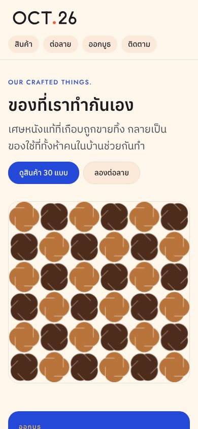
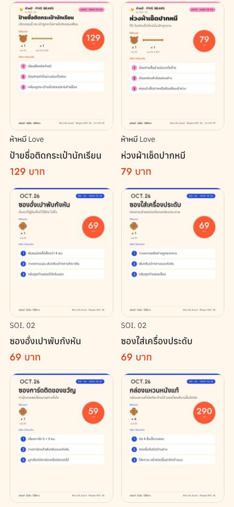
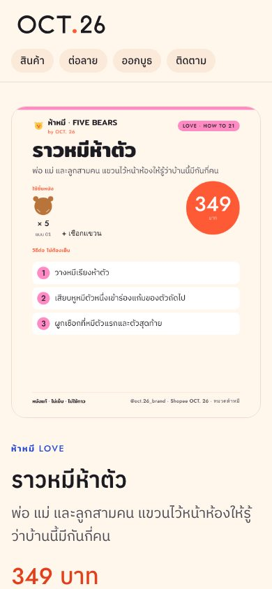

ศึกษาแนวทางเว็บขายของบนมือถือ พฤติกรรมคนไทยซื้อของออนไลน์ และไล่ดูเว็บเราทีละหน้า เพื่อคุยกันก่อนทำ mock ยังไม่ได้แก้เว็บจริง
งานนี้ขายแค่ 7 SKU ชิ้นเดียว (01 22 24 26 27 28 29) · ห้ามใช้ 06 · การต่อชิ้นยังไม่ผ่าน ห้ามโฆษณาว่าต่อเองได้ไม่ต้องเย็บ · ยังไม่มีรูปสินค้าจริง · กำลังร่างแบรนด์ทางเลือก งานเว็บควรรอ
เว็บจริงตอนนี้ยังโชว์ 30 ชิ้น รวมของจาก 06 ของที่ต้องต่อชิ้น คำว่า “ไม่ต้องเย็บ” และหน้าต่อลาย ไม่ตรงกับสถานะ ซึ่งเป็นเรื่องที่ควรแก้ก่อนเรื่องอื่น เพราะ QR ที่บูธพาคนมาที่เว็บนี้ ยังไม่ได้แก้ รอพ่อเบสั่ง
เพราะเหลือ 7 ชิ้น การแบ่งหมวดตามโอกาสและช่วงราคาจึงยังไม่จำเป็น หน้าแรกโชว์ 7 ชิ้นได้ในจอเดียว หลักเรื่องรูปจริง ปุ่มแชทติดจอ LINE และบอกตรงเรื่องของยังใช้ได้เหมือนเดิม
ตัวเลขเหล่านี้ส่วนใหญ่มาจากแหล่งรองหรือบทสรุปรายงาน ใช้ดูทิศทาง ไม่ใช่ตัวเลขแม่นยำ
ลูกค้าของเราเข้าเว็บจากสามทาง: สแกน QR ที่บูธ, กดลิงก์จากไอจี/เฟซบุ๊ก, และค้นชื่อร้าน เกือบทั้งหมดเปิดบนมือถือ และไม่ได้มาซื้อทันที มาดูว่ามีอะไร ราคาเท่าไร แล้วทักแชท ทางที่ควรลื่นที่สุดคือ
Baymard (2026): หน้าสินค้าบนมือถือที่ “พอใช้ได้” ขึ้นไปมีแค่ 38% ของเว็บที่ทดสอบ และข้อมูลที่ซ่อนไว้ในหน้าย่อยมักถูกมองข้าม หน้าสินค้าควรมีทุกอย่างที่ต้องใช้ตัดสินใจในหน้าเดียว



ส่วนที่ดีอยู่แล้ว: โหลดเร็ว ตัวหนังสือไทยอ่านง่าย สีแบรนด์ชัด ราคาเห็นทันที มีข้อความสั่งซื้อให้คัดลอก ประกาศออกบูธเด่น ส่วนที่ควรแก้
ทั้ง 30 ชิ้นใช้โปสเตอร์วิธีต่อเป็นรูปหลัก ย่อเหลือ 170 px แล้วอ่านไม่ออก ลูกค้าไม่เห็นผิว สี และขนาดจริง ของแฮนด์เมดต้องพิสูจน์คุณภาพด้วยรูป
มีแค่ไอจี ไม่มี LINE ไม่มีลิงก์ Shopee ในหน้าสินค้า ปุ่มสั่งอยู่กลางหน้า เลื่อนลงอ่านวิธีต่อแล้วต้องเลื่อนกลับขึ้นมา และการคัดลอกข้อความแยกจากปุ่ม ต้องทำสองขั้น
กรองได้แค่ตามคอลเลกชัน ซึ่งลูกค้าไม่รู้จัก ไม่มีหมวดตามโอกาส (ของขวัญ งานแต่ง ของเด็ก ใช้ในบ้าน) ไม่มีช่วงราคา ทั้งที่ 14 ชิ้นราคาต่ำกว่า 100 บาท
ภาพใหญ่ในจอแรกเป็นลายกังหันจากหน้าต่อลาย ยังไม่เห็นสินค้า ไม่เห็นมือหรือหน้าคนในบ้าน เรื่อง “ห้าคนในบ้านช่วยกันทำ” ซึ่งเป็นจุดขายที่สุด อยู่ลึกลงไป
ขายได้จริง 7 จาก 30 ชิ้น อีก 23 ชิ้นใช้ 06 หรือต้องต่อชิ้น ซึ่งยังไม่ผ่านการทดสอบ ลูกค้าทักมาแล้วได้คำตอบว่าไม่มี จะเสียความรู้สึก และเว็บยังเขียนว่าไม่ต้องเย็บ
ส่งยังไง ค่าส่งเท่าไร จ่ายยังไง รับที่บูธได้ไหม สั่งจำนวนมากได้ไหม ต้องทักถามทุกครั้ง ส่วนรีวิวหรือรูปลูกค้าจริง ยังไม่มีเลย
ลิงก์ก่อนหน้า/ถัดไปในหน้าสินค้าสูงไม่ถึง 44 px กดยากบนมือถือ หน้าต่อลายสนุก แต่เป็นของเล่น ไม่ควรเป็นเมนูที่สองข้างปุ่มดูสินค้า
รูปแรกของทุกสินค้าเป็นรูปถ่ายจริงบนพื้นเรียบ รูปที่สองเห็นขนาดเทียบมือหรือของใช้ โปสเตอร์วิธีต่อไว้เป็นรูปท้าย
แถบล่างในหน้าสินค้า: ราคา + “สั่งทาง LINE” + “สั่งทาง IG” กดแล้วเปิดแชทพร้อมข้อความชื่อสินค้าและราคา
หมวด: ของขวัญ · ใช้ในบ้าน · ของเด็ก · งานแต่ง/ของชำร่วย · ต่อเองได้ และช่วงราคา ต่ำกว่า 100 / 100–199 / 200 ขึ้นไป
จอแรกเห็นมือคนในบ้านกับของจริง หนึ่งประโยคบอกว่าเป็นเศษหนังแท้ที่ทำกันเองทั้งบ้าน ส่วนหน้าลูกไม่ต้องโชว์ก็ได้ ใช้มือแทน
ป้ายบนสินค้า: พร้อมส่ง / สั่งทำ 3–5 วัน / หมดชั่วคราว และกล่องสั้น ๆ “สั่งยังไง” สามขั้น อยู่ทุกหน้า
ไม่ต้องเรียงครบ 30 ชิ้นในหน้าแรก โชว์ขายดี 8 ชิ้น (ราวหมีห้าตัว ที่ห้อยกระเป๋าหมี …) แล้วพาเข้าหมวด
หน้าต่อลายยังอยู่ ย้ายจากเมนูหลักไปเป็นส่วน “ลองต่อลายเล่น” ท้ายหน้าแรกและในหน้าสินค้าที่ใช้ชิ้นนั้น Web Builder จะเพิ่มช่อง หมวด สถานะของ และรูปจริงตามไปด้วย